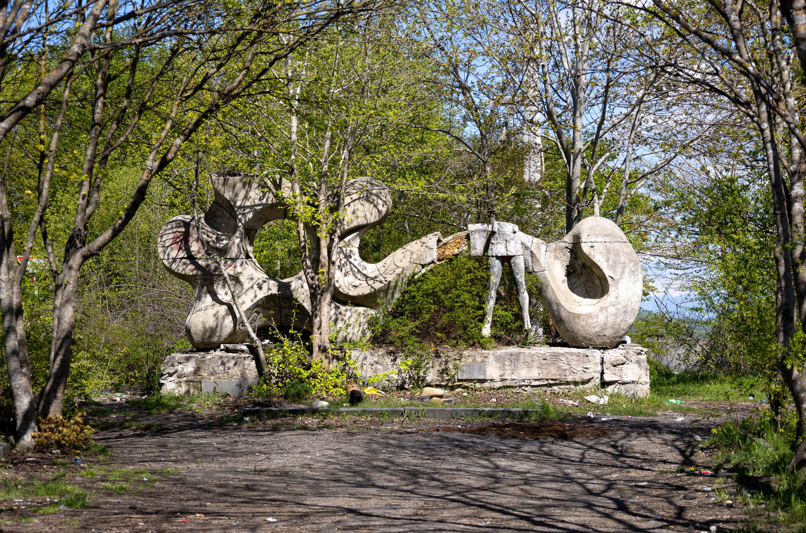
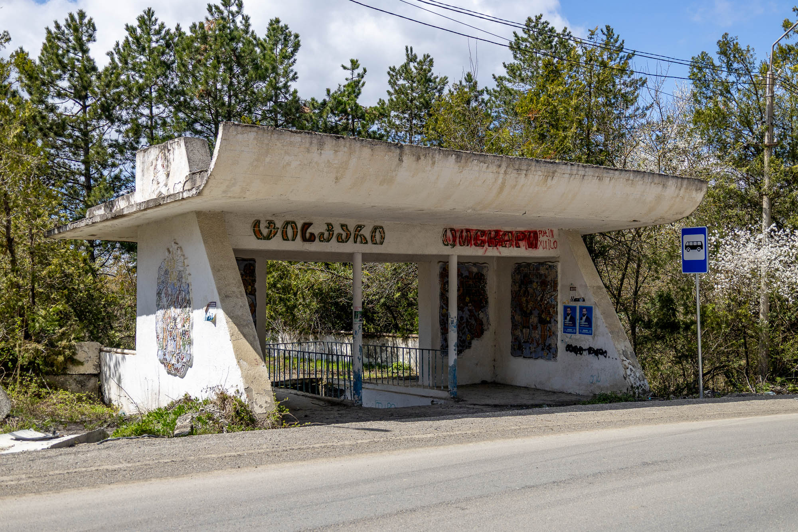
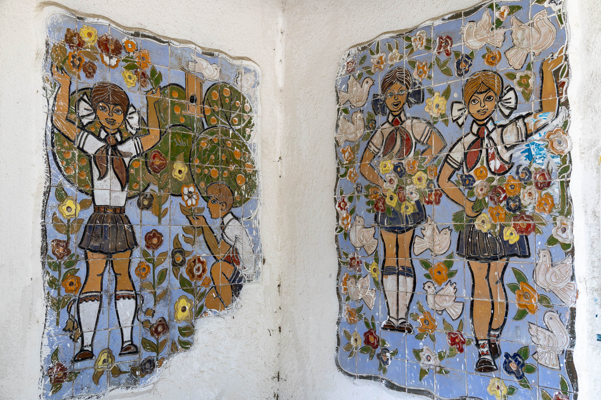
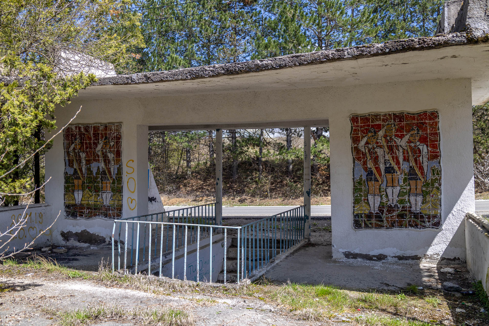
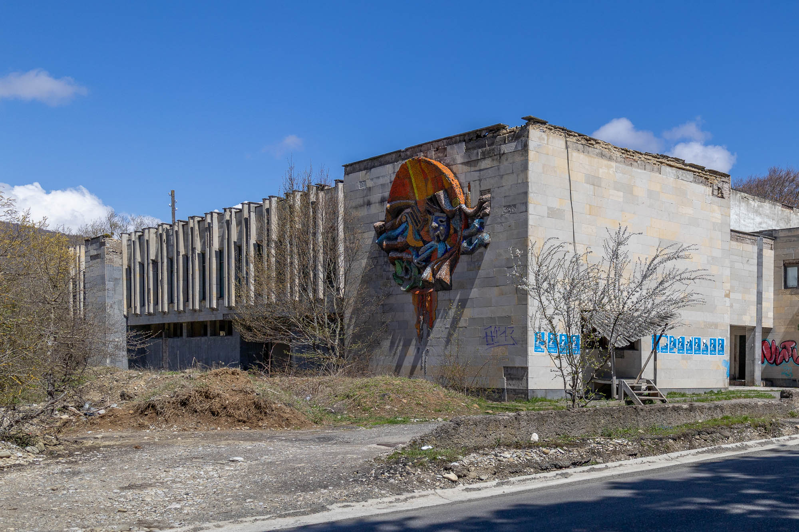
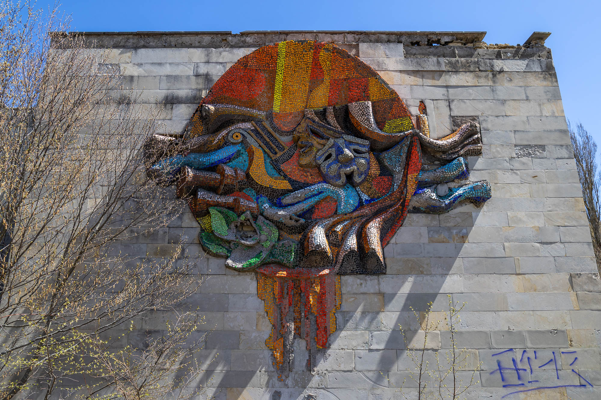
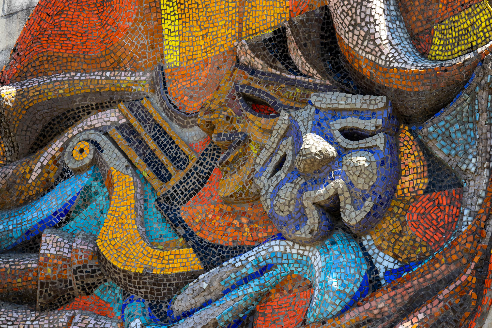
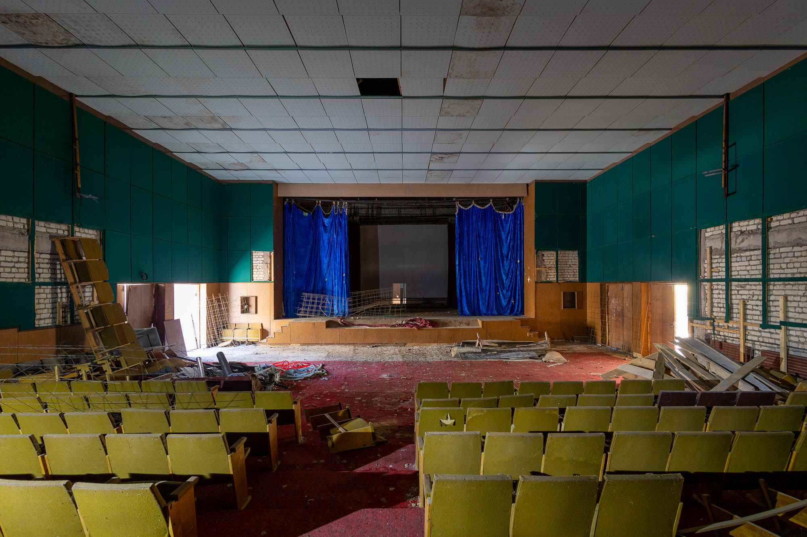

On the edge of Tbilisi, just far enough away from the rush and pollution of city life, is Tskhvarichamia. It is rich in nature, history, and dogs that bite. On my visit, I fortunately/unfortunately experienced all of these first-hand.

Entrance Statue
At the end of Sabaduri Forest and the start of Tskhvarichamia Village, you can find this ruined Soviet-era concrete monument. Today it is unfortunately a bit of a mess, as you can see from all the rubbish scattered on the ground near the statue. However, it was once a grand welcome to a very nice resort town famous for its fresh mountain air.

Village Bus Stop
On the main road, opposite the abandoned school, you will find this tile-mural-rich bus stop. It has eight murals in total, each depicting different elements of childhood life, from the beauty of nature to the beauty of being a pioneer. I just wish the recent painter had done a more beautiful job and splattered less paint on the tiles.



House of Culture
Once the centrepiece of this village, it is now an abandoned shell of a building. Like all former community centres from the Soviet Union, this one has a great mosaic on an outer wall. This mosaic depicts the stage and theatre, which you can also visit. Just walk through the open doors, through the abandoned hallways, and into the half-preserved theatre.



As I left the building, as if it knew I was somewhere I wasn't meant to be, a dog snuck up on me and bit my leg. This cut my visit to Tskhvarichamia short, meaning I'll have to come back one day to see the other village welcome sign and other abandoned buildings.